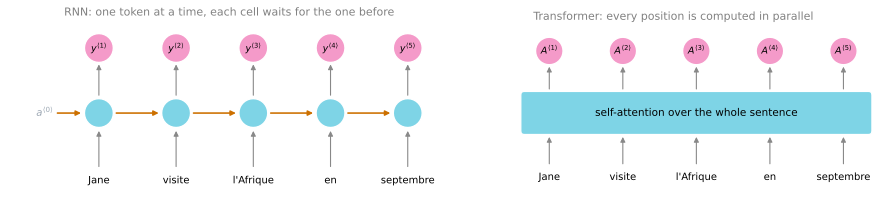
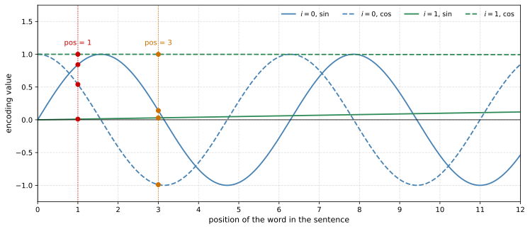

![Three panels under one long arrow labeled increased complexity, still one token at a time. The left panel, RNN, holds a single cyan tanh circle with the previous activation entering from the left and the new activation leaving to the right. The middle panel, GRU, holds a green reset gate feeding a cyan tanh candidate, a green update gate, and a purple combine box sitting on the orange state line. The right panel, LSTM, holds three green gate circles and one cyan tanh candidate on a lower row, a purple multiply and a purple add on the orange cell-state line above them, and a second cyan tanh with two further purple multiply nodes on an intermediate row between the two.](transformer-network_files/figure-html/cell-2-output-1.svg)
Transformer Network
deep-learning
sequence-models
nlp
transformer
self-attention
multi-head-attention
positional-encoding
machine-translation
Self-attention, multi-head attention, and how encoder and decoder blocks, positional encoding, residual connections, and masking combine into the transformer.
One of the most exciting developments in deep learning has been the transformer network, sometimes just called transformers. It is an architecture that has completely taken the NLP world by storm, and many of the most effective algorithms for NLP today are built on it. It is a relatively complex network, so this page goes through it piece by piece. By the end you should have a good sense of how the whole thing works and be able to apply it to your own problems.
Why a New Architecture
As the complexity of a sequence task increases, so does the complexity of the model. This course started with the plain RNN and found that it had trouble with vanishing gradients, which made it hard to capture long-range dependencies in a sequence. The GRU and then the LSTM resolved many of those problems by using gates to control the flow of information. Each of those units carries a few more computations than the one before, so while the gates improved control over information flow, they also came with increased complexity. From RNN to GRU to LSTM, the models became more complex.
All three are still sequential models. They ingest the input one word, or one token, at a time. Each unit acts like a bottleneck on the flow of information, because to compute the output of the final unit you first have to compute the outputs of every unit that comes before it.
The transformer architecture lets you run far more of these computations for an entire sequence in parallel. It can ingest a whole sentence all at the same time rather than processing it one word at a time from left to right. It was published in a seminal paper, Vaswani et al. (2017), whose title, “Attention Is All You Need”, gives away the main idea.
The major innovation is to combine two things you have already met. The first is the attention-based representations from the attention model. The second is a convolutional network style of processing. An RNN may process one output at a time, so \(y^{\langle 0 \rangle}\) feeds into the computation of \(y^{\langle 1 \rangle}\), which is then used to compute \(y^{\langle 2 \rangle}\). That is a very sequential way to handle tokens. Contrast it with a convnet, which takes in a lot of pixels, or here a lot of words, and computes representations for all of them in parallel. What you see in the transformer is a way of computing very rich, very useful representations of words, but with something much more like that CNN-style parallel processing.

Two key ideas make this work, and the rest of the page takes them in turn.
- Self-attention. Given a sentence of five words, compute five representations for those five words, written \(A^{\langle 1 \rangle}\) through \(A^{\langle 5 \rangle}\). This is an attention-based way of computing representations for all the words in the sentence in parallel.
- Multi-head attention. This is basically a for-loop over the self-attention process, so you end up with multiple versions of those representations.
These representations turn out to be very rich, and they can be used for machine translation and other NLP tasks to great effect.
Self-Attention
If you get the main idea of this section, you understand the most important core idea behind what makes transformer networks work.
You have seen how attention is used with sequential networks such as RNNs. To use attention in a style closer to CNNs, you calculate self-attention, which creates an attention-based representation for each word in the input sentence. Take the running example Jane visite l'Afrique en septembre. The goal is to compute one attention-based representation per word, so five of them, called \(A^{\langle 1 \rangle}\) through \(A^{\langle 5 \rangle}\).
Use the third word, l'Afrique, as the worked case. The same process then applies to every other word.
You already know about word embeddings, and one way to represent l'Afrique would be to just look up its embedding. But depending on context, is this Africa as a site of historical interest, as a holiday destination, or as the second largest continent in the world? Depending on which, you might want to represent it differently, and that is what \(A^{\langle 3 \rangle}\) does. It looks at the surrounding words to figure out how Africa is being talked about in this particular sentence and finds the most appropriate representation.
The actual calculation is not too different from the attention mechanism you saw applied to RNNs, except that the representations for all five words are computed in parallel. When attention was built on top of an RNN, the weights came from a softmax over scores, which was written like this on the attention model page.
\[\alpha^{\langle t, t' \rangle} = \frac{\exp\left(e^{\langle t, t' \rangle}\right)}{\displaystyle\sum_{t''=1}^{T_x} \exp\left(e^{\langle t, t'' \rangle}\right)}\]
With self-attention the equation instead looks like this.
\[A(q, K, V) = \sum_{i} \frac{\exp\left(q \cdot k^{\langle i \rangle}\right)}{\displaystyle\sum_{j} \exp\left(q \cdot k^{\langle j \rangle}\right)}\, v^{\langle i \rangle}\]
The two have some similarity. The inner term is a softmax, just like before, and you can think of the exponent terms as being akin to attention values. The main difference is that for every word, say l'Afrique, you now have three vectors called the query, key, and value. These are the key inputs to computing the attention value for each word.
Query, Key, and Value
Step through the computations needed to go from the word l'Afrique to its self-attention representation \(A^{\langle 3 \rangle}\).
First, associate each word with its three vectors. If \(x^{\langle 3 \rangle}\) is the word embedding for l'Afrique, the query is computed with a learned matrix, and the key and value likewise.
\[q^{\langle 3 \rangle} = W^Q x^{\langle 3 \rangle}, \qquad k^{\langle 3 \rangle} = W^K x^{\langle 3 \rangle}, \qquad v^{\langle 3 \rangle} = W^V x^{\langle 3 \rangle}\]
The matrices \(W^Q\), \(W^K\), and \(W^V\) are parameters of the learning algorithm. They let you pull a query, a key, and a value out of every word.
So what are these three vectors supposed to do? They were named using a loose analogy to databases, where you have queries and key-value pairs. If you know that kind of database the analogy may help, and if not, do not worry about it. Here is one intuition behind their intent.
- \(q^{\langle 3 \rangle}\) is a question you get to ask about
l'Afrique. It might represent something like “what is happening there?”, since Africa is a destination and that is a natural thing to want to know when computing \(A^{\langle 3 \rangle}\). - The inner product \(q^{\langle 3 \rangle} \cdot k^{\langle 1 \rangle}\), query 3 with key 1, says how good an answer word 1 is to that question. Then \(q^{\langle 3 \rangle} \cdot k^{\langle 2 \rangle}\) says how good an answer
visiteis to “what is happening in Africa?”, and so on for the other words in the sequence. - The goal of this operation is to pull up the information most needed to compute a useful representation \(A^{\langle 3 \rangle}\).
For intuition, suppose \(k^{\langle 1 \rangle}\) represents that Jane is a person and \(k^{\langle 2 \rangle}\) represents that visite is an action. Then you may find that \(q^{\langle 3 \rangle} \cdot k^{\langle 2 \rangle}\) has the largest value, suggesting that visite gives the most relevant context for what is happening in Africa, namely that it is viewed as the destination of a visit.
Computing \(A^{\langle 3 \rangle}\)
Take the five inner products and compute a softmax over them. That is the softmax in the equation above, and in this example the entry for visite may be the largest. Then multiply each softmax value by the corresponding value vector, \(v^{\langle 1 \rangle}\) for word 1, \(v^{\langle 2 \rangle}\) for word 2, and so on, and sum everything up. That summation is the \(\sum_i\) in the equation, and adding up all the terms gives \(A^{\langle 3 \rangle}\).
On a small screen, scroll horizontally to inspect the whole computation.
![Five columns, one per French word. In each column the word feeds a gray embedding box, which fans out into three small boxes labeled q, k, and v. The query of the third column, l'Afrique, is outlined and connected by blue lines to five score boxes labeled q three dot k one through q three dot k five. Above the scores is a bar chart of softmax weights with the visite bar tallest and colored blue. Orange lines of varying thickness run from the five value boxes up into a pink box labeled A three at the top.](transformer-network_files/figure-html/cell-4-output-1.svg)
l'Afrique. Every word’s embedding is turned into a query (blue), a key (green), and a value (orange) by the three learned matrices. The query for l'Afrique is dotted with all five keys to give five scores, a softmax turns the scores into weights, and the weights scale the five values, which are summed into \(A^{\langle 3 \rangle}\). The weights are hand-authored to show the pattern, with visite winning, rather than read off a trained model.Another way to write \(A^{\langle 3 \rangle}\) is as \(A(q^{\langle 3 \rangle}, K, V)\), the general formula applied to the third query, but it is often more convenient to just write \(A^{\langle 3 \rangle}\).
The key advantage of this representation is that l'Afrique is no longer some fixed word embedding. The self-attention mechanism can realize that l'Afrique is the destination of a visite, and so compute a richer, more useful representation for the word.
Vectorized Form
l'Afrique has been the running example, but you use the same process for all five words to get similarly rich representations for Jane, visite, l'Afrique, en, and septembre. Putting all five computations together, the notation used in the literature is
\[\text{Attention}(Q, K, V) = \text{softmax}\left(\frac{Q K^T}{\sqrt{d_k}}\right) V\]
where \(Q\), \(K\), and \(V\) are matrices holding all the queries, keys, and values. This is just a compressed, vectorized form of the per-word equation above. The \(\sqrt{d_k}\) in the denominator only scales the dot product so it does not explode, and you do not need to worry about it. Because of that scaling, another name for this type of attention is scaled dot-product attention, which is the form in the original transformer paper.
It helps to read that equation as shapes. The five queries stack into the rows of \(Q\), the five keys into the rows of \(K\), and the five values into the rows of \(V\). The product \(QK^T\) is then a five by five table whose entries are divided by \(\sqrt{d_k}\) to give the scores. The softmax runs along each row, so row \(i\) carries the weights for word \(i\), and multiplying by \(V\) turns each row of weights into one representation. Row 3 of the output is the \(A^{\langle 3 \rangle}\) that was built by hand above.
On a small screen, scroll horizontally to inspect the whole chain of matrices.
![A left-to-right chain of matrices. A tall blue matrix Q with five rows labeled q one through q five is multiplied by a wide green matrix K transpose whose five columns are labeled k one through k five, giving a five by five blue table of scores with the entry in row three, column two outlined. A gray arrow labeled softmax over each row leads to a five by five pink table of weights whose rows each sum to one, with row three outlined. That table is multiplied by a tall orange matrix V holding v one through v five, giving a tall pink matrix whose five rows are A one through A five, labeled with the words Jane, visite, l'Afrique, en, and septembre.](transformer-network_files/figure-html/cell-5-output-1.svg)
NoteRecap of Self-Attention
Associated with each of the five words you end up with a query, a key, and a value.
- The query lets you ask a question about that word, such as “what is happening in Africa?”
- The key looks at all the other words and, by its similarity to the query, helps you figure out which word gives the most relevant answer to that question. Here
visiteis what is happening in Africa, since someone is visiting it. - The value lets the representation plug in how
visiteshould be represented inside \(A^{\langle 3 \rangle}\), the representation of Africa.
The result is a representation of l'Afrique that says “this is Africa, and someone is visiting Africa”. That is much more nuanced and much richer than pulling up the same fixed word embedding for every occurrence of a word, with no way to adapt it to the words on its left and right.
Multi-Head Attention
The notation gets a little complicated here, but the thing to keep in mind is that multi-head attention is basically a big for-loop over the self-attention mechanism. Each time you calculate self-attention for a sequence is called a head, and “multi-head attention” just means doing what the last section did a number of times.
Recall that you got the vectors \(q\), \(k\), and \(v\) for each input word by multiplying its embedding by \(W^Q\), \(W^K\), and \(W^V\). Multi-head attention takes that same set of query, key, and value vectors as input and calculates multiple self-attentions from them.
For the first head, multiply the queries, keys, and values by a further set of weight matrices, \(W_1^Q\), \(W_1^K\), and \(W_1^V\). That gives a new query, key, and value for the first word, and you do the same for each of the other words. For intuition, think of \(W_1^Q\), \(W_1^K\), and \(W_1^V\) as being learned to help ask and answer the question “what is happening there?” This is more or less the self-attention example of the last section. With this computation, visite gives the best answer to “what is happening?”, so the inner product between the query for l'Afrique and the key for visite is the largest. Running it for Jane, visite, and the rest gives five vectors to represent the five words. That is the first head, and its attention equation is exactly the one you have already seen.
Now do the computation again with a second head, which has its own new matrices \(W_2^Q\), \(W_2^K\), and \(W_2^V\). These let the mechanism ask and answer a second question. If the first question was “what is happening?”, maybe the second is “when is it happening?” You repeat exactly the same computation with this new set of matrices, and this time perhaps the inner product between the septembre key and the l'Afrique query is the highest, so the value for septembre plays a large role in this second part of the representation of l'Afrique.
A third head, with \(W_3^Q\), \(W_3^K\), and \(W_3^V\), might ask “who has something to do with Africa?” On this third pass the inner product between the Jane key and the l'Afrique query may be the highest, so Jane’s value gets the greatest weight.
![Three rows, each showing the five French words as boxes with l'Afrique highlighted. In the first row a blue arrow curves from l'Afrique to visite, labeled head 1, what is happening there. In the second a red arrow curves from l'Afrique to septembre, labeled head 2, when is it happening. In the third a black arrow curves from l'Afrique to Jane, labeled head 3, who is involved. Each row ends in a pink box holding that head's representation, the three feed a tall concat box, which feeds a box labeled W O and then an output arrow.](transformer-network_files/figure-html/cell-6-output-1.svg)
l'Afrique matches most strongly on that pass. The three results are concatenated and multiplied by \(W^O\) to give the multi-head output for l'Afrique. Which word wins in each head is hand-authored to match the intuition in the text.In the literature the number of heads is written with a lowercase \(h\). Three heads here, or eight in the original paper, means performing the whole self-attention calculation that many times, each with its own matrices. You can think of each head as a different feature, and when you pass these features on to the rest of the network you can compute a very rich representation of the sentence.
\[\text{head}_i = \text{Attention}\left(W_i^Q Q,\; W_i^K K,\; W_i^V V\right)\]
\[\text{MultiHead}(Q, K, V) = \text{concat}\left(\text{head}_1, \text{head}_2, \ldots, \text{head}_h\right) W^O\]
The output of multi-head attention is the concatenation of all \(h\) heads, multiplied by one more matrix \(W^O\).
That first equation writes each head’s matrices on the left, as the lecture slide does, which is schematic rather than dimensional. The shapes figure earlier in the page stacks one word per row, and that is the convention under which \(\text{softmax}(QK^T/\sqrt{d_k})V\) has the shapes it needs. Written the same way, a head is
\[\text{head}_i = \text{Attention}\left(Q W_i^Q,\; K W_i^K,\; V W_i^V\right)\]
This is the form in the original paper. Each \(W_i\) now multiplies on the right, so its array is the transpose of the course’s, and the shapes line up with \(\text{concat}(\ldots) W^O\) above.
NoteOne Multiplication, Not Two
The walkthrough above follows the lecture and projects twice, once from the embedding \(x\) into \(q\), \(k\), and \(v\), and then again inside each head. An implementation projects once. Every head already carries its own \(W_i^Q\), \(W_i^K\), and \(W_i^V\), so in the simplest case of multi-head self-attention you feed the same \(x\) into all three input slots of the head and let the head’s own matrices do the whole job. Nothing is lost by dropping the earlier projection, because two learned linear maps with nothing in between compose into a single linear map.
The three slots are still written separately because they are not always fed the same thing. The decoder block below has the case where they differ.
One more detail is worth keeping in mind. This description computed the heads as if in a big for-loop, and conceptually it is fine to think of it that way. In practice, though, no head’s value depends on the value of any other head, so you can compute all the heads in parallel instead of sequentially, then concatenate and multiply by \(W^O\). That is multi-head attention.
From here on, a single box labeled “multi-head attention” stands for this whole computation. It takes the matrices \(Q\), \(K\), and \(V\) as input and produces the multi-head output.
Transformer Architecture
Self-attention and multi-head attention are the pieces. Now put them together, and walk through translating Jane visite l'Afrique en septembre from French to English.
Up to now only the embeddings of the words in the sentence have mattered. In many sequence to sequence translation tasks it is also useful to add a start of sentence token <SOS> and an end of sentence token <EOS>, as in the encoder-decoder models earlier in the course, so both are included here.
Encoder Block
The first step is to feed the embeddings into an encoder block, which has a multi-head attention layer. This is exactly the computation of the previous section. You feed in the values \(Q\), \(K\), and \(V\) computed from the embeddings and the weight matrices \(W\), and the layer produces a matrix that is passed into a feed-forward neural network, which helps determine what interesting features there are in the sentence.
In the transformer paper this encoding block is repeated \(N\) times, and a typical value is \(N = 6\). After about six passes through the block, the output of the encoder is fed into a decoder block.
Decoder Block
The decoder block’s job is to output the English translation. Its first output is the start of sentence token, which is known in advance. At every step the decoder takes as input the first few words, meaning whatever has been generated of the translation so far. When you are just getting started, the only thing known is that the translation begins with <SOS>.
That token is fed into a first multi-head attention block. Since there is only this one token so far, it alone is used to compute the \(Q\), \(K\), and \(V\) for this block. The output of this first block is used to generate the \(Q\) matrix for a second multi-head attention block, while the output of the encoder is used to generate its \(K\) and \(V\).
Why is it structured this way? Here is one piece of intuition. The input at the bottom of the decoder is what has been translated of the sentence so far. It asks a query, something like “what comes after the start of sentence?” It then pulls context from \(K\) and \(V\), which come from the French version of the sentence, to decide what the next word in the translation should be.
To finish the decoder block, the second attention block’s output is fed to a feed-forward neural network. The decoder block is also repeated \(N\) times, maybe six, where you take the output and feed it back to the input, through the block again, for say half a dozen passes.
The job of that neural network is to predict the next word in the sentence. Hopefully it decides that the first word of the English translation is Jane. Then Jane is fed back in as input as well. Now the next query comes from <SOS> and Jane, and it says, in effect, “given Jane, what is the most appropriate next word?” It finds the right keys and values and, hopefully, generates visits. Running the network again generates Africa, which is fed back in, then hopefully in, then September, and with that input the network hopefully generates <EOS>, and you are done.
These encoder and decoder blocks, and the way they combine to perform a sequence to sequence translation task, are the main ideas behind the transformer architecture. This example translated a sentence into another language, and it shows how attention in neural networks can be combined to allow simultaneous computation.
Extra Bells and Whistles
Beyond the main ideas, transformers have a few extras that make the network work even better. Here they are in brief, and the diagram after them shows where each one sits.
Positional encoding. Look back at the self-attention equations. Nothing in them indicates the position of a word. Is this word the first in the sentence, in the middle, or the last? Position within a sentence can be extremely important to translation, so the position of each element in the input is encoded using a combination of sine and cosine functions.
Suppose the word embedding is a vector with four values, so its dimension is \(d = 4\) and \(x^{\langle 1 \rangle}\), \(x^{\langle 2 \rangle}\), \(x^{\langle 3 \rangle}\) are four-dimensional. Create a positional encoding vector of the same dimension, also four-dimensional, and call it \(p^{\langle 1 \rangle}\) for the first word Jane. Its entries come from these two equations.
\[PE_{(pos,\, 2i)} = \sin\left(\frac{pos}{10000^{2i/d}}\right), \qquad PE_{(pos,\, 2i+1)} = \cos\left(\frac{pos}{10000^{2i/d}}\right)\]
Here \(pos\) is the numerical position of the word, so \(pos = 1\) for Jane, and \(i\) indexes the different dimensions of the encoding. The first two entries of the vector correspond to \(i = 0\), one from the sine and one from the cosine, and the next two to \(i = 1\). With \(d = 4\), \(i\) runs from 0 to 1. Because of the terms in the denominator, \(i = 0\) gives a sinusoid and its matched cosine, 90 degrees out of phase, while \(i = 1\) gives a lower-frequency sinusoid and its matched cosine.
Every value of \(i\) therefore appears twice, once under a sine and once under a cosine. When you write this in code it is easier to count over the entries of the vector directly. Let \(k\) run from 0 to \(d - 1\) over the dimensions of the embedding, and recover the index in the formulas as the integer division \(i = k // 2\). Even values of \(k\) take the sine and odd values take the cosine, which for \(d = 4\) and Jane at \(pos = 1\) fills the vector like this.
| \(k\) | \(i = k // 2\) | Entry of \(p^{\langle 1 \rangle}\) | Value at \(pos = 1\) |
|---|---|---|---|
| 0 | 0 | \(\sin\left(pos / 10000^{0/4}\right)\) | 0.84 |
| 1 | 0 | \(\cos\left(pos / 10000^{0/4}\right)\) | 0.54 |
| 2 | 1 | \(\sin\left(pos / 10000^{2/4}\right)\) | 0.01 |
| 3 | 1 | \(\cos\left(pos / 10000^{2/4}\right)\) | 1.00 |

Jane, and the dots at \(pos = 3\) give \(p^{\langle 3 \rangle}\) for l'Afrique.For position 1 you read off the values at that position to fill in the four entries of \(p^{\langle 1 \rangle}\), which come out to about \((0.84, 0.54, 0.01, 1.00)\). For a different word at a different position, say the third word l'Afrique at \(pos = 3\), you read off a different set, about \((0.14, -0.99, 0.03, 1.00)\). Notice that the last two entries of the two vectors are nearly the same, because the slow \(i = 1\) curves are at roughly the same height at both positions. But taken across all four values, \(p^{\langle 3 \rangle}\) is a different vector from \(p^{\langle 1 \rangle}\), and that is the point. The sines and cosines together create a positional encoding vector that is unique for each position.
The positional encoding \(p^{\langle 1 \rangle}\) is added directly to \(x^{\langle 1 \rangle}\) at the input, so each word vector is also influenced, or colored, by where in the sentence the word appears. The output of the encoding block therefore contains both contextual semantic embedding and positional encoding information. The output of the embedding layer has shape \(d\) by the maximum sequence length the model can take, four by that length in this example, and the outputs of all the following layers have the same shape.
Residual connections. In addition to adding the positional encodings to the embeddings, they are also carried through the network with residual connections, similar to the ones in residual networks. Their purpose here is to pass the positional information along through the entire architecture.
Add & norm. The transformer also uses a layer called add & norm that is very similar to batch norm. For the purposes of this page do not worry about the differences, and think of it as playing a very similar role. It helps speed up learning, and this batch-norm-like layer is repeated throughout the architecture.
Linear and softmax output. At the output of the decoder block there is a linear layer and then a softmax layer, which predict the next word one word at a time.
Masked multi-head attention. If you read the literature on transformers you will also see something called masked multi-head attention. It matters only during training, when you are using a dataset of correct French to English translations to train the transformer. The walkthrough above showed the transformer predicting one word at a time. So how does it train?
Say the dataset holds the correct pair, Jane visite l'Afrique en septembre and Jane visits Africa in September. When training, you have access to the entire correct English translation, the correct output, as well as the correct input. Because the full correct output is available, you do not have to generate the words one at a time during training. Instead, masking blocks out the last part of the sentence to mimic what the network will need to do at test time, during prediction. In other words, masked multi-head attention repeatedly pretends that the network has perfectly translated the first few words, hides the remaining words, and checks whether, given a perfect first part of the translation, the network can accurately predict the next word in the sequence.
On a small screen, scroll horizontally to inspect the whole model.
![A block diagram with an encoder stack on the left and a decoder stack on the right. Both stacks start from an embeddings box at the bottom with a plus circle where positional encoding is added. The encoder stack, framed by a dashed box labeled encoder block times N, holds multi-head attention, add and norm, feed-forward neural network, and add and norm, with gray side lines showing residual connections. The decoder stack, in its own dashed frame, holds masked multi-head attention, add and norm, multi-head attention receiving an arrow labeled K V from the encoder output, add and norm, feed-forward neural network, and add and norm, then linear and softmax boxes above it and the label next word. A dotted line carries the next word back down to the decoder input, labeled the translation generated so far.](transformer-network_files/figure-html/cell-8-output-1.svg)
That is a summary of the transformer architecture. Since “Attention Is All You Need” came out there have been many other iterations of this model, such as BERT, from Devlin et al. (2018), and DistilBERT, from Sanh et al. (2019). There was a lot of detail here, but you now have a good sense of all the major building blocks of the transformer network.
NoteWhat You Should Remember
- RNNs, GRUs, and LSTMs process a sequence one token at a time, so every unit waits for the one before it. The transformer computes representations for the whole sequence in parallel, combining attention with a CNN-style parallel processing.
- Self-attention gives every word a query, a key, and a value, each produced by a learned matrix from the word’s embedding. The query asks a question, the keys of all the words say how well each one answers it, a softmax over those scores gives weights, and the weighted sum of the values is the word’s new representation.
- The vectorized form is \(\text{Attention}(Q, K, V) = \text{softmax}(QK^T / \sqrt{d_k})\, V\), called scaled dot-product attention. The \(\sqrt{d_k}\) only stops the dot products from exploding.
- Multi-head attention runs self-attention \(h\) times with different matrices \(W_i^Q\), \(W_i^K\), \(W_i^V\), so each head can ask a different question. The heads are concatenated and multiplied by \(W^O\), and since no head depends on another, they run in parallel.
- The encoder block is multi-head attention followed by a feed-forward network, repeated \(N\) times, with \(N = 6\) typical. The decoder block attends over the translation generated so far, then attends over the encoder output with its own \(Q\) and the encoder’s \(K\) and \(V\), then a feed-forward network predicts the next word, which is fed back in.
- Nothing in self-attention knows where a word sits, so a sine and cosine positional encoding is added to each embedding, and residual connections carry that positional information through the whole network. Add & norm layers play a role similar to batch norm, and a linear plus softmax layer produces each next word.
- Masked multi-head attention is a training device. Given a correct translation, it hides the words past a point and asks the network to predict the next one, so the whole sentence can be trained on at once without generating it word by word.
Review Questions
1. RNNs, GRUs, and LSTMs all share one limitation that the transformer was designed to remove. What is it, and what does the transformer do instead?
Answer
All three are sequential. They ingest the input one token at a time, and each unit is a bottleneck because computing the final unit’s output requires first computing the outputs of every unit before it. Adding gates, as the GRU and LSTM do, improves control over the flow of information but adds complexity and does nothing about the sequential bottleneck.
The transformer computes representations for the entire sequence in parallel. It ingests the whole sentence at once, using attention-based representations combined with a CNN-style parallel processing rather than a left-to-right chain.
1. In self-attention, how are the query, key, and value for the word l'Afrique obtained, and what role does each play in computing \(A^{\langle 3 \rangle}\)?
Answer
All three come from the word embedding \(x^{\langle 3 \rangle}\) through learned matrices, \(q^{\langle 3 \rangle} = W^Q x^{\langle 3 \rangle}\), \(k^{\langle 3 \rangle} = W^K x^{\langle 3 \rangle}\), and \(v^{\langle 3 \rangle} = W^V x^{\langle 3 \rangle}\). The matrices \(W^Q\), \(W^K\), \(W^V\) are parameters of the model.
The query is a question asked about l'Afrique, such as “what is happening there?” The key of every word is dotted with that query, and the size of \(q^{\langle 3 \rangle} \cdot k^{\langle i \rangle}\) says how good an answer word \(i\) is to the question. A softmax over the five scores turns them into weights. The value of each word is what actually gets plugged into the representation, so \(A^{\langle 3 \rangle}\) is the weighted sum \(\sum_i \alpha_i v^{\langle i \rangle}\). If visite wins the softmax, its value dominates, and the representation of Africa now carries the fact that someone is visiting it.
1. Why does the transformer need a positional encoding when an RNN did not?
Answer
An RNN reads the words in order, so position is built into the computation. Nothing in the self-attention equations indicates the position of a word. The dot products \(q \cdot k\) and the weighted sum of values would come out the same whether a word was first, in the middle, or last, yet position within a sentence can be extremely important to translation.
The fix is to build a vector \(p^{\langle t \rangle}\) of the same dimension \(d\) as the embedding from sine and cosine functions of the position, with each pair of entries at a different frequency, so that every position gets a unique vector. That vector is added directly to the embedding \(x^{\langle t \rangle}\), and residual connections carry the positional information through the rest of the network.
1. Which of the following statements about multi-head attention are true? Select all that apply.
Each head uses its own matrices \(W_i^Q\), \(W_i^K\), \(W_i^V\), so different heads can ask different questions about each word.
The heads must be computed one after another, because head \(i+1\) depends on the output of head \(i\).
The output is the concatenation of the \(h\) heads multiplied by a matrix \(W^O\).
Using \(h\) heads means the self-attention computation is performed \(h\) times.
Answer
a, c, and d. Multi-head attention is a for-loop over self-attention, so d is right, and each pass has its own set of matrices, which is what lets one head ask “what is happening?” while another asks “when?” and a third asks “who?”, so a is right. The head outputs are concatenated and multiplied by \(W^O\), so c is right.
Option b is false. No head’s value depends on any other head, which is exactly why they can be computed in parallel instead of sequentially. The for-loop is a way to think about it, not a constraint on the implementation.
1. In the decoder, the second multi-head attention block receives \(Q\), \(K\), and \(V\) from two different places. Where does each come from, and what is the intuition?
Answer
The \(Q\) matrix is generated from the output of the decoder’s first attention block, which attended over the translation generated so far, starting with just <SOS>. The \(K\) and \(V\) matrices are generated from the output of the encoder, which holds the representation of the French sentence.
The intuition is that the partial translation asks a query, such as “given <SOS> and Jane, what is the most appropriate next word?”, and the keys and values pull the relevant context out of the French sentence to answer it. The feed-forward network after the block then predicts the next English word, which is fed back in as input for the following step.
1. True or false. Masked multi-head attention is used both during training and during prediction.
Answer
False. Masking matters only during training. At prediction time the network genuinely generates one word at a time, so there is nothing to hide. During training the whole correct English translation is available, so instead of generating words one at a time the network pretends it has perfectly translated the first few words, hides the remaining ones, and is checked on whether it predicts the next word correctly. Masking is what does the hiding, and it lets the full sentence be trained on at once while still mimicking what the network faces at test time.
1. The encoder and decoder blocks are each repeated \(N\) times. What is a typical value of \(N\), and what happens to the output of the encoder after its last repetition?
Answer
A typical value is \(N = 6\), so the input goes through the encoder block about six times. After the last pass, the output of the encoder is fed into the decoder, where it is used to generate the \(K\) and \(V\) matrices of the decoder’s second multi-head attention block. The decoder block is likewise repeated about six times, taking its output and feeding it back to its input, before the linear and softmax layers predict the next word.
1. The comparison figure labels the GRU “two gates on one state” and the LSTM “three gates and a separate cell state”. What is the difference between one state and a separate cell state?
Answer
The GRU carries a single recurrent state and has no separate cell state. The course writes that state as \(c^{\langle t \rangle}\) to emphasize its role as memory, with \(c^{\langle t \rangle} = a^{\langle t \rangle}\), and the update gate decides how much of the candidate replaces it.
The LSTM carries two. A cell state \(c^{\langle t \rangle}\) runs along its own path through the unit, and an activation \(a^{\langle t \rangle}\) is derived from it. The forget and update gates write to the cell state, and the output gate decides how much of that state becomes the activation. The third gate is what pays for the extra path.
1. A sentence has five words. In the vectorized form of attention, what are the shapes of \(QK^T\) and of the final output, and along which axis does the softmax run?
Answer
Stacking one word per row makes \(Q\) and \(K\) of shape \(5 \times d_k\) and \(V\) of shape \(5 \times d_v\). The product \(QK^T\) is \(5 \times 5\), holding one score for every query and key pair, and each entry is divided by \(\sqrt{d_k}\).
The softmax runs along each row, so row \(i\) holds the five weights that word \(i\) places on the five words of the sentence, and each row sums to 1. Multiplying that \(5 \times 5\) weight matrix by \(V\) gives a \(5 \times d_v\) output with one representation per word, and row 3 of it is \(A^{\langle 3 \rangle}\).
1. Inside a multi-head attention layer, do you first multiply each word embedding by \(W^Q\), \(W^K\), and \(W^V\) before passing it into a head?
Answer
No. Every head already carries its own \(W_i^Q\), \(W_i^K\), and \(W_i^V\), so the projection happens once, inside the head. In the simplest case of multi-head self-attention you feed the same \(x\) into all three input slots and let the head’s matrices do the whole job. Projecting first would put two learned linear maps back to back with nothing in between, and those compose into a single linear map, so the earlier projection adds nothing.
The three slots are still written separately because they are not always fed the same thing. The decoder’s second attention layer is the case where they differ.
1. A word embedding has dimension \(d = 4\). Which entries of the positional encoding vector use \(i = 0\), and what fills entry \(k = 2\)?
Answer
Let \(k\) run from 0 to \(d - 1\) over the entries of the vector and set \(i = k // 2\). Every value of \(i\) therefore covers two entries, one sine and one cosine. Entries \(k = 0\) and \(k = 1\) use \(i = 0\), and entries \(k = 2\) and \(k = 3\) use \(i = 1\).
Even values of \(k\) take the sine and odd values take the cosine, so entry \(k = 2\) is \(\sin\left(pos / 10000^{2/4}\right)\). For Jane at \(pos = 1\) that comes out to about 0.01.
References
- Devlin, J., Chang, M.-W., Lee, K., & Toutanova, K. (2018). BERT: Pre-training of deep bidirectional transformers for language understanding. arXiv. https://doi.org/10.48550/arXiv.1810.04805
- Sanh, V., Debut, L., Chaumond, J., & Wolf, T. (2019). DistilBERT, a distilled version of BERT: Smaller, faster, cheaper and lighter. arXiv. https://doi.org/10.48550/arXiv.1910.01108
- Vaswani, A., Shazeer, N., Parmar, N., Uszkoreit, J., Jones, L., Gomez, A. N., et al. (2017). Attention is all you need. arXiv. https://doi.org/10.48550/arXiv.1706.03762